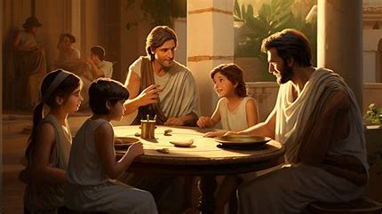

Introducción a la Cultura Griega
La cultura griega es una de las más influyentes en la historia de la humanidad, con un legado que ha perdurado a través de los siglos. Desde la filosofía hasta las artes, la antigua Grecia ha dejado una huella indeleble en la civilización occidental.
Vida Cotidiana
La vida cotidiana en la antigua Grecia incluía una variedad de actividades como la agricultura, la artesanía y la participación en eventos sociales. Las casas griegas eran típicamente de una sola planta con patios interiores, y los griegos valoraban la simplicidad y la funcionalidad en su vida diaria. La dieta se basaba en el trigo, el aceite de oliva y el vino, y la ropa se confeccionaba con lana y lino.
Religión y Mitología
La religión era una parte integral de la vida en la antigua Grecia, con numerosos dioses y diosas que formaban parte de su mitología rica y compleja. Los griegos celebraban festivales y sacrificios en honor a sus dioses, y cada ciudad-estado tenía su propio patrono divino. Zeus, Atenea y Apolo eran algunas de las deidades más importantes, y los mitos griegos influyen todavía hoy en la literatura y el arte.
Arte y Literatura
El arte y la literatura griega han dejado una huella indeleble en la historia del arte mundial. Las esculturas clásicas, como las del Partenón, reflejan la búsqueda de la perfección y la belleza idealizada. La literatura griega, con obras épicas como "La Ilíada" y "La Odisea" de Homero, ha inspirado a generaciones de escritores y sigue siendo fundamental en los estudios literarios.
Filosofía y Ciencia
Los griegos antiguos hicieron importantes contribuciones a la filosofía y la ciencia, con figuras como Sócrates, Platón y Aristóteles que sentaron las bases del pensamiento occidental. En ciencia, los griegos avanzaron en áreas como la geometría, la astronomía y la medicina, influyendo profundamente en el conocimiento y la tecnología.
Deporte y Recreación
Los deportes y la recreación eran fundamentales en la cultura griega, destacándose los Juegos Olímpicos que se celebraban cada cuatro años en Olimpia. Los griegos valoraban mucho la aptitud física, y los deportes incluían el atletismo, la lucha y las carreras de carros. Estos eventos no solo eran competiciones atléticas, sino también celebraciones religiosas y culturales.